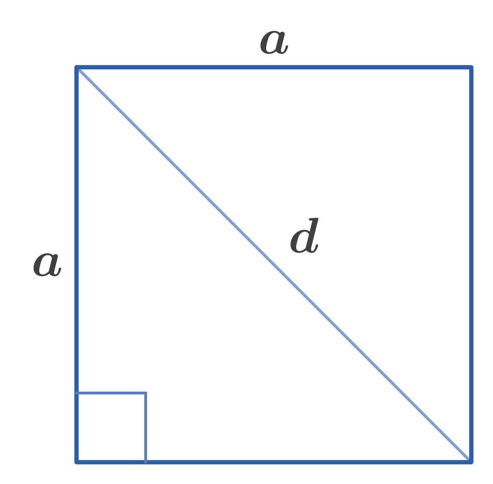

Side of a square: $a$
Diagonal: $d$
Radius of circumscribed circle: $R$
Radius of inscribed circle: $r$
Perimeter: $L$
Area: $S$
1. $d=a\sqrt{2}$
2. $R=\dfrac{d}{2}=\dfrac{a\sqrt{2}}{2}$
3. $r=\dfrac{a}{2}$
4. $L=4a$
5. $S=a^2$